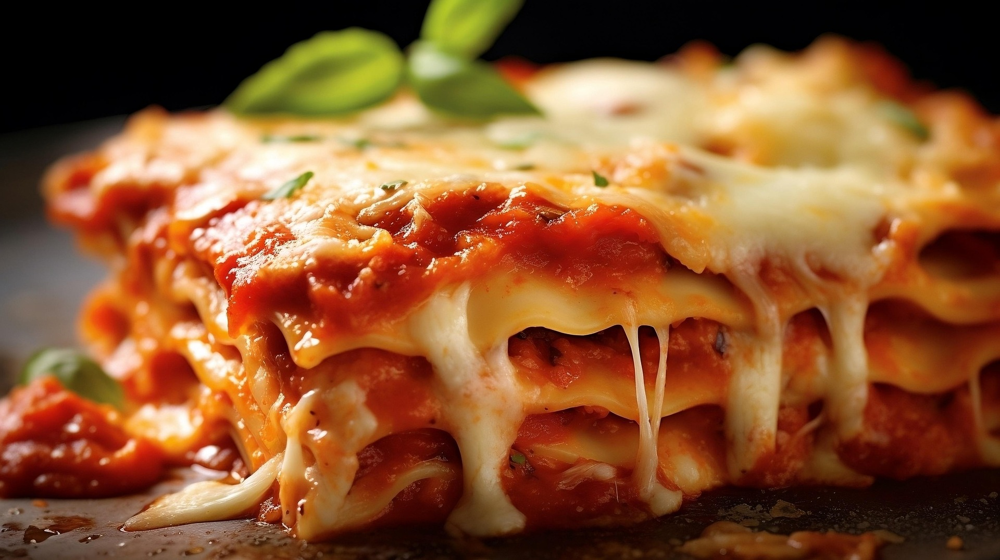

I know just about everyone has their own favorite lasagna recipe, but I'm here to tell you—this one really is The Best Lasagna Ever. My mom and her friends used to bake this homemade Italian lasagna for family dinners and potlucks, and I’ve kept that tradition alive on the ranch. The best part? It is made with simple, everyday ingredients. No fancy cheeses or hard-to-find herbs—just regular pantry and fridge staples that you probably already have on hand. Anyone can make this, anywhere, anytime.
Aside from the simplicity and availability of ingredients, though, it also happens to be one of the tastiest. There’s something so satisfying about pulling a bubbling pan of cheesy baked pasta out of the oven. The layers of noodles, rich meat sauce, and cheese meld into one glorious, hearty masterpiece. It’s comforting, it’s crowd-pleasing, and it’s just so dadgum good. Over the years, I’ve served this easy lasagna from scratch to friends, family, cowboys, city folks, Democrats, Republicans, scholars, and foreign dignitaries. I even donated a couple of pans to a charity auction once. The overwhelming consensus has always been that it's "The Best Lasagna Ever," which is precisely what I've been trying to tell you, turkeys. You'd be crazy not to love it.